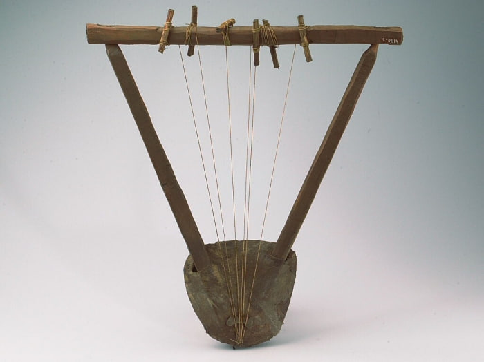
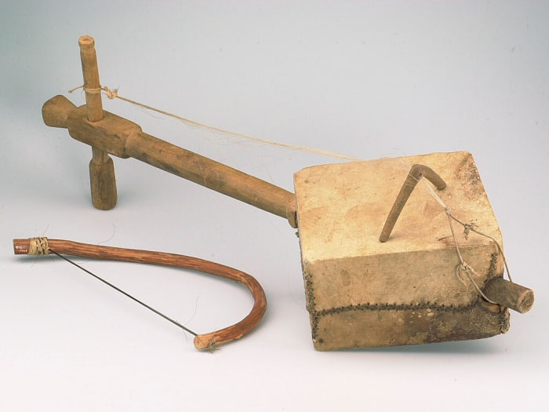
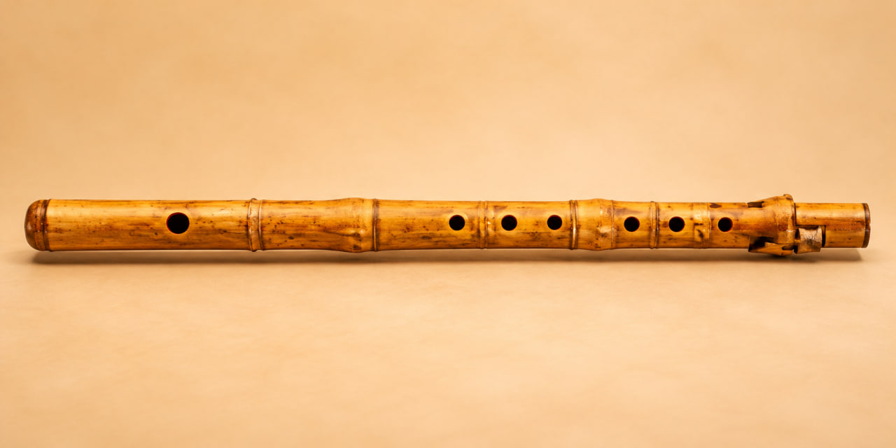
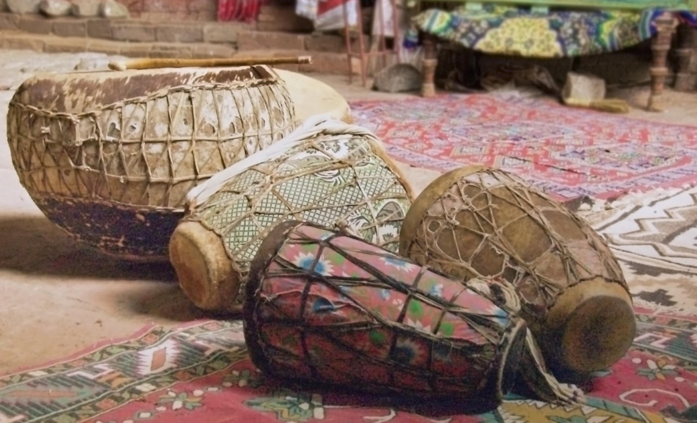
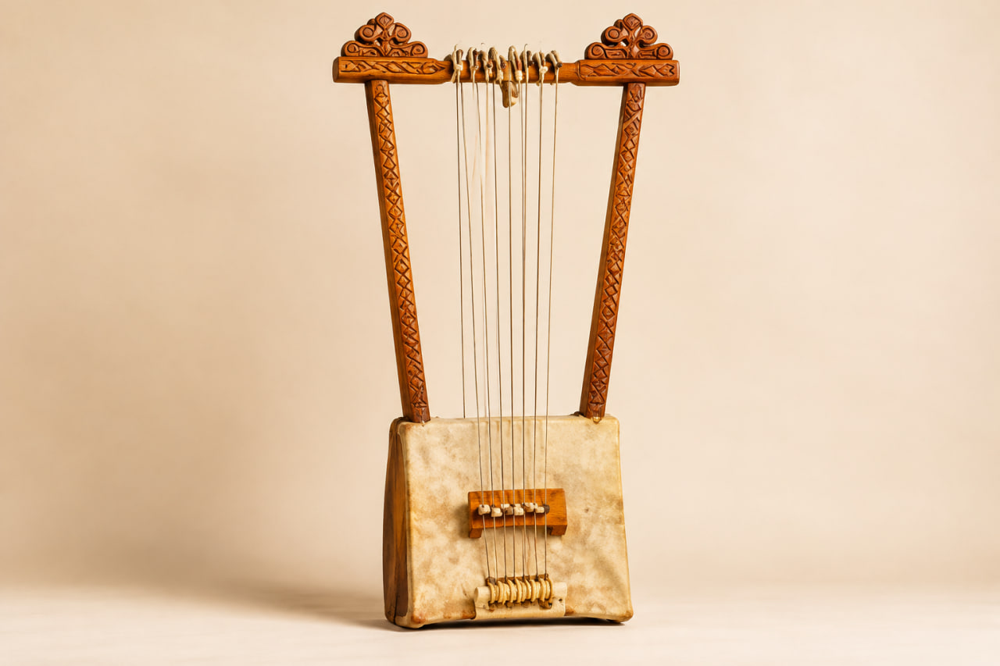
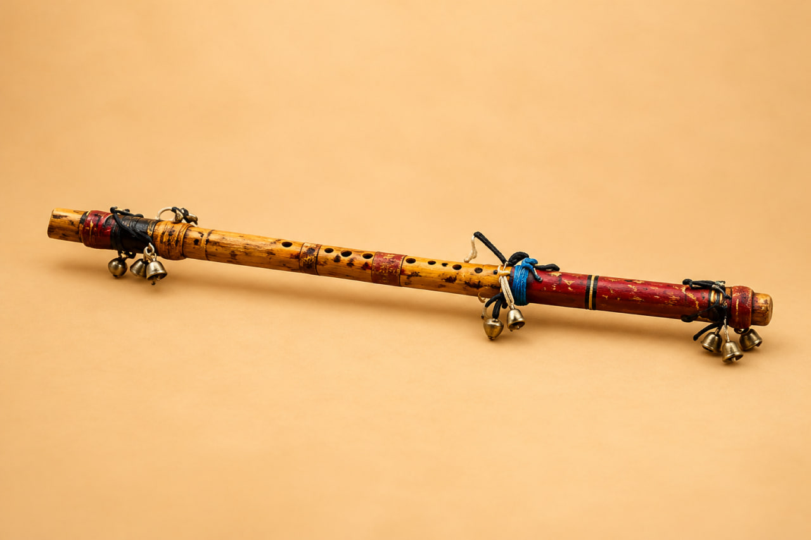

Comparing the Instruments
| Instrument | Type | Main feature |
|---|---|---|
| Krar | String | Five or six strings |
| Masinko | String | One string, played with a bow |
| Washint | Wind | Bamboo flute |
| Kebero | Percussion | Double-headed drum |
| Begena | String | Ten strings |
| Embilta | Wind | Long pipe |
How Each Instrument Is Played
- Krar: played by plucking the strings with the fingers or a pick.
- Masinko: played with a bow while pressing the string.
- Washint: played by blowing air across the flute.
- Kebero: played by striking the drum with the hands.
- Begena: played by plucking the strings.
- Embilta: played by blowing air into the pipe.
Photographs





